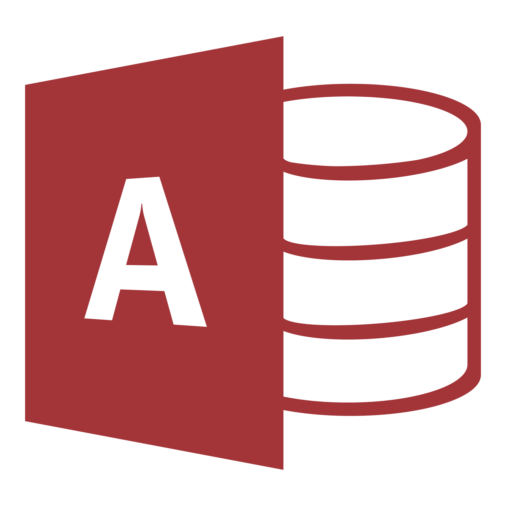
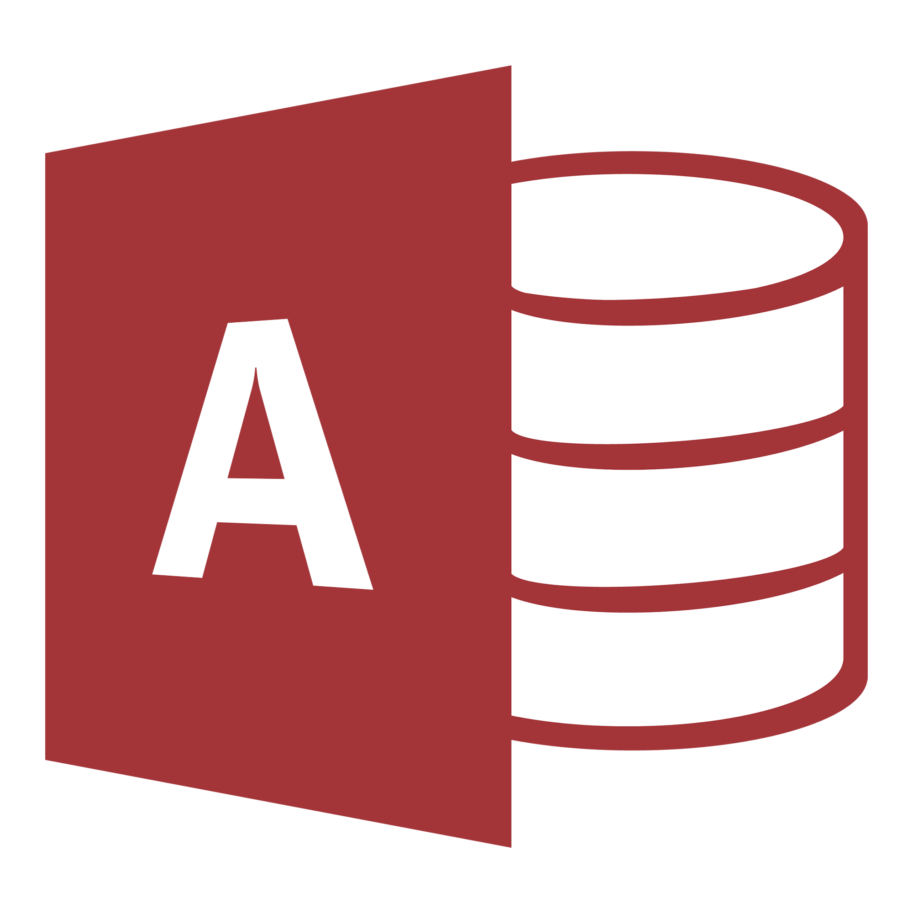

Qui suis-je ?
Salut, je m'appelle Mohamed, a l'heure ou tu vois ce site j'ai 18 ans, je suis comme tout jeune qui se respecte un petit passionnée de technologie, je vis présentement au Québec(ne me demander pas comment je survie au froid, je me pose la même question). J'ai d’énorme projet a réaliser dans la vie mais rien ne concrétise sans expérience, j'ai donc fais pour commencer chez Comunic a Lyon, ma ville natale. On ma donne comme taches d'analyser pendant une semaine d'analyser le site de l'entreprise pour en déceler les erreurs, les choses qui pouvais êtres améliores. Désormais je m'occupe de réparer les ordinateurs défectueux au Cégep lorsque je suis libre, je suis presque tri-langue, oui oui il ne me reste qu'a peaufiner mon arabe et je pourrais dire que je sais maitriser 3 langues(français, anglais, arabe).
Language de programmation :
-
Javascript
-
Visual Studio
-
Python
-
C++
-
Php

 
